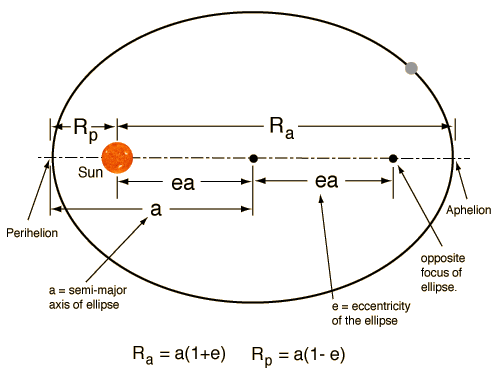
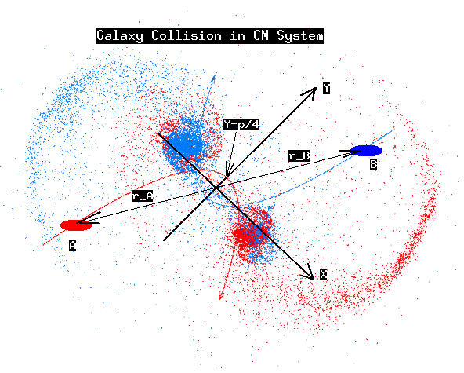

Midterm and Final Projects#
Introduction#
Midterm#
Toomre & Toomre, 1972 argued that the bridges and tails seen in some multiple galaxies are tidal relics of close encounters. They developed a simple model of the tidal interaction of two galaxies, and showed that the model could account for the observed features of the Antennae galaxies (NGC 4038/4039) and the Mice galaxies (NGC 4676A/B). The midterm projects are done within the framework of the Toomre & Toomre model of the restricted three-body problem.
(a) The midterm code runs the collision as a restricted three-body problem. Team members should collaborate on the code, report, and presentation.
(b) The team should write their own code, but can consult other code like Aarseth.
(c) The NEMO tools are available for help but not as substitution for the team’s simulations. The solution is the team’s code and its visualization and interpretation.
(d) The softening parameter should be kept in the code, like in the Toomre & Toomre setup.
Midterm projects will be presented during Week 8.
Final#
The final projects are the best full simulations using the disk-bulge-halo model of Kuijken & Dubinski, 1995.
(a) The galaxy can be created with mkgalaxy or magalia at your choice of resolution and initial disk/bulge/halo composition.
(b) Team code sets up the initial condition for the collision. Team members should collaborate on the code, report, and presentation.
(c) The gyrfalcON code runs the simulation.
(d) The NEMO tools are available for help but not as substitution for the team’s simulations. The solution is the team’s initial condition setup with code, run with gyrfalcON, and visualization/interpretation.
(e) The results are aimed to be comparable to the corresponding reference work from the literature.
Final projects will be presented during Week 10.
The Mice Project (NGC 4676)#

Located about 290 million light-years away in the constellation Coma Berenices, the colliding galaxies NGC 4676A and 4676B have been nicknamed “The Mice” because of the long tails of stars and gas emanating from each galaxy. The long tails are produced by tidal action—the relative difference between gravitational pulls on the near and far parts of each galaxy—known here as a galactic tide. The pair will most likely continue colliding until they eventually coalesce into a single giant galaxy.
For convenience, Toomre & Toomre chose the time unit to be \(10^8\) years, the pericenter distance \(R_\mathrm{min}=25\) kpc and the heavier mass in each encounter, \(10^{11} M_{\odot}\), chosen as the mass unit.
The collision orbits (elliptic, or parabolic) are identified by choosing (1) \(R_\mathrm{min}=r_{p}\) and (2) the initial separation \(R_\mathrm{init}\), or the equivalent time \(t_\mathrm{init}\), with \(t=0\) chosen at pericenter.
Initial velocities are dependent on the masses of the galaxies. Disk orientations and other input parameters are determined from the reference material of the projects as requested in the project descriptions.
For the midterm project Toomre & Toomre disk galaxy models are prepared with test particles to run the restricted 3-body integrator.
In the final project realistic Galaxies are crafted at the origin of the coordinate system using mkgalaxy or magalie to generate disk-bulge-halo galaxies.
Midterm: Mice Project#
Figure 22 on page 657 in Toomre & Toomre summarizes the initial setup of their most successful Mice encounter. Reproduce their result of Fig. 22 using 297 disk particles in each disk as described on page 20. They fill 11 concentric rings of radii \(0.2\) to \(0.7R_{\mathrm{min}}\) with a step size of \(0.05R_{\mathrm{min}}\). Increase the filling of the rings by increments of three test particles starting with 12 particles on the innermost ring. The outermost ring contains 42 particles. Run your restricted 3-body code where the test particles are tracking the two elliptic orbits of the core galaxies. The test particles are interacting with the cores only. Work in the center-of-mass coordinate system where the relative coordinate vector \(\vec{r}\) traces the elliptic Kepler orbit. For the elliptic orbits, use the appropriate parametrization:

The origin of the CM coordinate system can be chosen to coincide with the Sun location of the figure. Two equal disks of radius \(0.7R_\mathrm{min}\) experience an elliptic encounter with \(e=0.6\), having begun flat and circular at the time \(t=-16.4\) of the last apocenter. As viewed from either disk, the adopted node to peri angles \(\omega_A=\omega_B=-90^{\circ}\) with inclinations \(i_A=15^{\circ}, i_B=60^{\circ}\). The angles are discussed in Fig. 6a,b (see also the galaxy rotations note and collision orbit note). The resulting composite object is shown at \(t=6.086\) in Fig. 22.
(1) Compare Toomre & Toomre to your simulation.
(2) Animate and make an mpeg movie.
(3) Give a simple explanation of the tidal tails and explain whether the tidal tails are in the plane of the rotating disks, or the collision plane.
(4) Write a project report and prepare a 20 minutes presentation.
Mice midterm examples:
Final: Mice Project#
Barnes, 2004 argued that a realistic full simulation of the encounter using realistic bulge-disk-halo galaxy model calls for parabolic encounter. He gave arguments that the bulge-disk-halo galaxy structure requires to replace the elliptic encounter of Toomre & Toomre with parabolic encounter. For the initial condition, consider to separate galaxies on parabolic collision course. Galaxy A and galaxy B do not overlap initially, and the center of masses of the individual galaxies would continue on a parabolic orbit, if the interactions of the stars would not change the picture when the galaxies begin to overlap.

First, we would like to set up the appropriate initial condition for the collision as depicted in the figure above. Notes on the setup are given in the collision orbit note. Notes on the disk angles are given in the galaxy rotations note. Barnes chose in the paper the length unit to be 35.7 kpc, the velocity unit as 180 km/s = 0.184 kpc/Myr, and the mass unit as \(2.69\times 10^{11} M_{\odot}\). One time unit then works out to be 194 Myr. Barnes chose for the galaxy components: \(M_b=1/16, M_d = 3/16, M_h = 1\). A parabolic orbit was chosen with \(r_{p}=0.25,\) \(r_\mathrm{disk}=1/12,\) \(a_{b}=0.04168,\) \(z_\mathrm{disk}=0.005,\) \(a_\mathrm{halo}=0.1\). The viewing time of the encounter is \(t=0.875\) after pericenter. The disk angles are \(i_A=25^{\circ}, i_B = 40^{\circ}, \omega_A = -30^{\circ}, \omega_B = 60^{\circ}\).
(1) Use mkgalaxy or magalie to fabricate the initial galaxies.
Choose your resolution for the project.
(2) Run gyrfalcON to reproduce the results of Barnes in the article.
(3) Animate and make mpeg movies of the project.
(4) Give a simple explanation of the consistency of tidal tails with Toomre & Toomre and explain whether the tidal tails are in the plane of the rotating disks, or the collision plane, or neither.
(5) Write a project report and prepare a 20 minute presentation.
The Antennae Project (NGC 4038/4039)#

60 million light-years away in the southerly constellation Corvus, two large galaxies, NGC 4038 and NGC 4039, are colliding. These two galaxies are known as the “Antennae Galaxies” because the two long tails of stars, gas and dust ejected from the galaxies as a result of the collision resemble an insect’s antennae. The nuclei of the two galaxies are joining to become one giant galaxy. Most galaxies probably undergo at least one significant collision in their lifetimes. This is likely the future of our Milky Way when it collides with the Andromeda Galaxy. This collision and merger sequence (known as the Toomre sequence) for galaxy evolution was developed in part by successfully modeling the Antennae Galaxies.
For convenience, Toomre & Toomre chose the time unit to be \(10^8\) years, the pericenter distance \(R_\mathrm{min}=25\) kpc and the heavier mass in each encounter, \(10^{11} M_{\odot}\), chosen as the mass unit.
The collision orbits (elliptic, or parabolic) are identified by choosing (1) \(R_\mathrm{min}=r_{p}\) and (2) the initial separation \(R_\mathrm{init}\), or the equivalent time \(t_\mathrm{init}\), with \(t=0\) chosen at pericenter.
Initial velocities are dependent on the masses of the galaxies.
Disk orientations and other input parameters are determined from the reference material of the projects as requested in the project descriptions.
For the midterm project Toomre & Toomre disk galaxy models are prepared with test particles to run the restricted 3-body integrator.
In the final project realistic Galaxies are crafted at the origin of the coordinate system using mkgalaxy or magalie to generate disk-bulge-halo galaxies.
Midterm: Antenna Project#
Figure 23 on page 37 in Toomre & Toomre summarizes the initial setup of their symmetric Antennae encounter. Reproduce their result of Fig. 23 using 345 disk particles in each disk as described on page 20. They fill 12 concentric rings of radii from \(0.2R_\mathrm{min}\) to \(0.75R_\mathrm{min}\) in steps of \(0.05R_\mathrm{min}\). Increase the filling of the rings by increments of three test particles added to the next ring and starting with 12 particles on the innermost ring. The outermost ring has 45 particles. Run your restricted 3-body code where the test particles are tracking the two elliptic orbits of the core galaxies with \(e=0.5\). The test particles are interacting with the cores only and the interaction is softened by \(\varepsilon=0.2R_\mathrm{min}\) at the closest range to mimic the distributed mass of the real object. Work in the center-of-mass coordinate system where the relative coordinate vector \(\vec{r}\) traces the elliptic Kepler orbit. For the elliptic orbits, use the appropriate parametrization:
The origin of the CM coordinate system can be chosen to coincide with the Sun location of the figure. Two equal disks of radius \(0.75R_{\min}\) experience an elliptic encounter, having begun flat and circular at the time \(t=-16.4\) of the last apocenter. As viewed from either disk, the adopted node to peri angles \(\omega_A = \omega_B = -30^\circ\) with inclinations \(i_A=60^\circ, i_B=60^\circ\). The angles are discussed in Fig. 6a,b (see also the galaxy rotations note and collision orbit note). The viewing time of the resulting composite object is \(t=15\) in Fig. 23.
(1) Compare Toomre & Toomre to your simulation.
(2) Animate and make an mpeg movie.
(3) Give a simple explanation of the tidal tails and explain whether the tidal tails are in the plane of the rotating disks, or the collision plane.
(4) Write a project report and prepare a 20 minutes presentation.
Antennae midterm examples:
Antennae report sample
Final: Antennae Project#
Barnes, 1988 designed a realistic full simulation of the Antennae encounter using realistic bulge-disk-halo galaxy model with elliptic encounter. For the initial condition, consider to separate galaxies on elliptic collision course with \(e=0.5\). Galaxy A and galaxy B do not overlap initially, and the center of masses of the individual galaxies would continue on an elliptic orbit, if the interactions of the stars would not change the picture when the galaxies begin to overlap.
First, we would like to set up the appropriate initial condition for the collision as depicted in the figure above, but the parabolic orbits replaced by elliptic ones. Notes on the setup for parabolic orbits are given in the collision orbit note and have to be replaced by the properties of elliptic orbits. Notes on the disk angles are given in the galaxy rotations note. Barnes chose in the paper the length unit to be 40 kpc, and the mass unit as \(2.2\times 10^{11}M_{\odot}\). One time unit is 250 Myr. Barnes chose for the galaxy components: \(M_b:M_d:M_h= 1: 3: 16\) with a total mass \(M_b+M_d+M_h = 1.25\). Elliptic orbits were chosen and started with \(r_{p}=0.5,\) \(r_\mathrm{disk}=1/12,\) node to peri angles \(\omega_A= \omega_B = -30^{\circ}\) with inclinations \(i_A=60^\circ, i_B=60^\circ\) and time \(t=1\) to epicenter to produce a slow and symmetrically prograde encounter with the two disks inclined so as to sling tidal tails high above the orbital plane where they will eventually be seen in projection as crossing each other. The viewing time of the encounter is close to the next apocenter.
(1) Use mkgalaxy or magalie to fabricate the initial galaxies.
Choose your resolution for the project.
(2) Run gyrfalcON to reproduce the results of Barnes in the article.
(3) Animate and make mpeg movies of the project.
(4) Give a simple explanation of the consistency of tidal tails with Toomre & Toomre and explain whether the tidal tails are in the plane of the rotating disks, or the collision plane, or neither.
(5) Write a project report and prepare a 20 minute presentation.
The Cartwheel Project (PGC 2248)#

The Cartwheel Galaxy is a lenticular galaxy and ring galaxy about 500 million light-years away in the constellation Sculptor. The galaxy was once a normal spiral galaxy before it apparently underwent a head-on “bullseye” style collision with a smaller companion approximately 200-300 million years prior to how we see the system today. When the nearby galaxy passed through the Cartwheel Galaxy, the force of the collision caused a powerful gravitational shock wave to expand through the galaxy. Moving at high speed, the shock wave swept up and compressed gas and dust, creating a starburst around the galaxy’s center portion that went unscathed as it expanded outwards. This explains the bluish ring around the center, brighter portion. The galaxy is beginning to retake the form of a normal spiral galaxy, with its arms that look like “spokes” spreading out from a central core.
Midterm: Cartwheel Project#
In the spirit of the Toomre & Toomre modeling of the Mice, Antennae, and Milky Way mergers, study Lynds & Toomre, 1976 to set up and reproduce their model.
(1) Obtain Lynds & Toomre models mimicking the mergers of Figs. 5 and 6 in the paper.
(2) Animate and make mpeg movies of your mergers.
(3) Give a simple explanation of the Cartwheel.
(4) Write a project report and prepare a 20 minutes presentation.
Cartwheel midterm examples:
Final: Cartwheel#
In the spirit of realistic modeling of galaxy mergers, like the Mice, Antennae, and Milky Way mergers, study Athanassoula et al., 1997 to set up and reproduce their model of the Cartwheel using disk-bulge-halo galaxies.
(1) Use mkgalaxy or magalie to fabricate the initial galaxies. Choose your resolution for the project.
(2) Run gyrfalcON to get close to the results of Athanassoula et al.
(3) Animate and make mpeg movies of the project.
(4) Give again simple explanation of how the Cartwheel merger happened.
(5) Write a project report and prepare a 20 minute presentation.